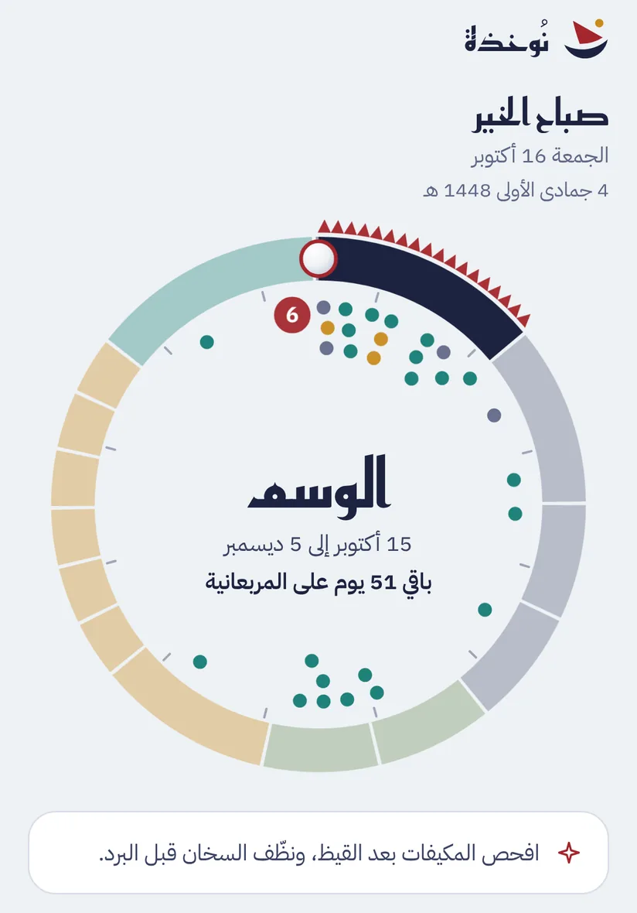
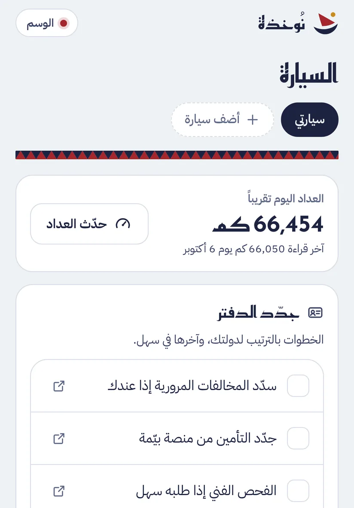
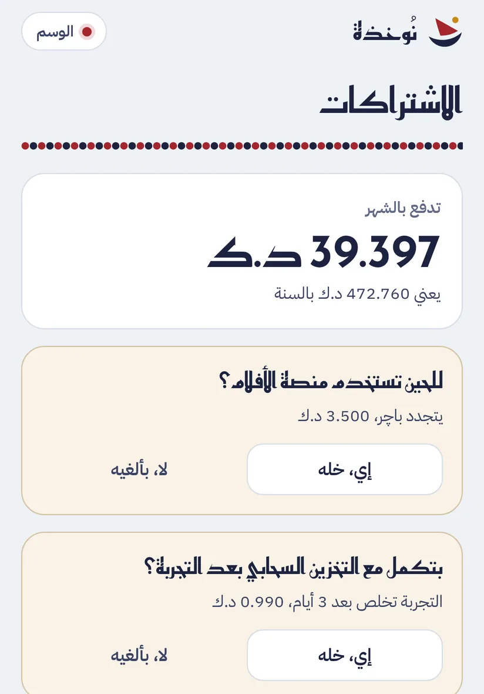
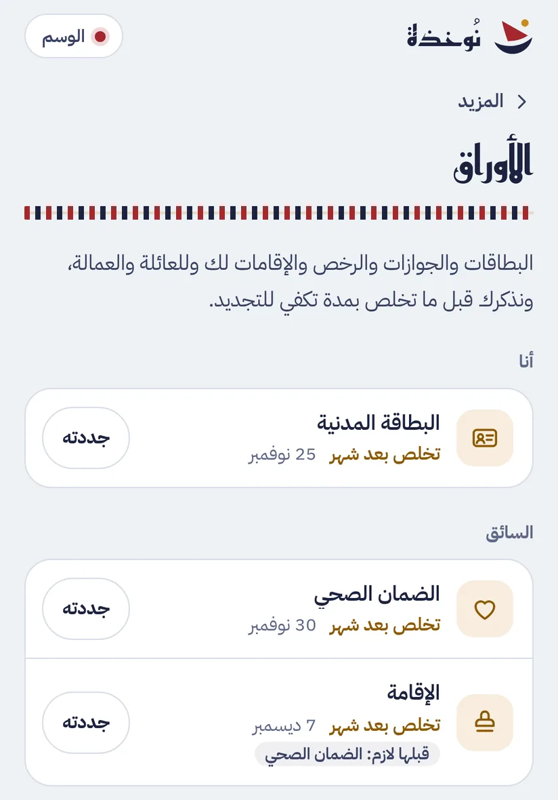

البيت
فلاتر المكيفات كل شهر وكل أسبوعين بالقيظ والبوارح، وغسيل المكيفات قبل الصيف، والتانكي والفلتر والسخان والسطح والشفاط والحشرات وكاشف الدخان والطفاية، وقائمة لكل بيت وشاليه ومزرعة، وقبل رمضان بأسبوعين قائمة تجهيز البيت.
تذكيرات لصيانة البيت والسيارة ومراقبة الاشتراكات، كل موعد فيها مضبوط على سنة الخليج من سهيل إلى الكليبين، وكل شي محفوظ على جهازك.
أهل الخليج قسموا السنة من زمان إلى مواسم يعرفون منها الحر والبرد والمطر والرياح، ونُوخذة يبني مواعيده عليها، فالمكيفات قبل الكنة والسطح قبل الوسم والسيارة قبل القيظ.
أسماء المواسم وبداياتها على التقويم المتداول في الكويت والخليج الذي يبدأ السنة بطلوع سهيل في 24 أغسطس، وقد تختلف البداية يوم أو يومين من منطقة لمنطقة.
كل مهمة تقول لك متى وليش بلهجتنا، وتقدر تخلّصها بضغطة أو تأجلها أو تغيّر مدتها.

فلاتر المكيفات كل شهر وكل أسبوعين بالقيظ والبوارح، وغسيل المكيفات قبل الصيف، والتانكي والفلتر والسخان والسطح والشفاط والحشرات وكاشف الدخان والطفاية، وقائمة لكل بيت وشاليه ومزرعة، وقبل رمضان بأسبوعين قائمة تجهيز البيت.

الزيت والفلاتر على الكيلو أو الوقت أيهما أقرب، والعداد يتقدّر من قراءاتك، والتواير والبطارية ومكيف السيارة قبل القيظ، وعمر التواير من رمز صنعها، ولما يقرب موعد الدفتر يطلع لك مسار التجديد بالترتيب الصحيح لدولتك بروابطه الرسمية، وضغطة وحدة في الآخر تضبط مواعيد الدفتر والتأمين والفحص.

تشوف كم تدفع بالشهر وبالسنة، وقبل كل تجديد نسألك إذا للحين تستخدمه فتلغي اللي ما تحتاجه قبل ما ينسحب المبلغ، والفترة التجريبية ما تنقلب مدفوعة بدون ما تدري.

البطاقة والجواز والرخصة والإقامة والضمان الصحي لك وللعائلة والعمالة، كل ورقة بمهلتها، والإقامة تذكّرك قبل شهرين والجواز قبل ستة، و"قبلها لازم" يذكّرك بالضمان الصحي قبل الإقامة، ونحفظ الاسم والتاريخ بس بدون أرقام.
وغيرها: تنبيهات الغبار والمطر والحر لمنطقتك مع درجة الحرارة، والغبار يتقاس على المعتاد عندك مو على رقم ثابت، والضمانات بصورة الفاتورة، ودفتر الفنيين بالاتصال والواتساب جنب مهامهم، وقائمة قبل سفرة الصيف، ومصاريف السنة، والتاريخ الهجري وعدّاد رمضان والعيدين وحول زكاتك، وأي مهمة تقدر ترسلها لمن يخصه برسالة جاهزة، وأي شي ثاني تبي تتابعه مثل الطراد والمولد والمسبح والمخيم.
ما تحتاج حساب، لأن المهام والاشتراكات وصور الفواتير محفوظة في جهازك والمواعيد تنحسب عليه، فما يوصلنا منها شي، ولا في إحصاء ولا إعلانات تراقب استخدامك، والتطبيق يشتغل بدون إنترنت بعد أول فتح.
النسخة الاحتياطية تنشفّر بـ AES-256-GCM بمفتاح مشتق من كلمة سرك، فما يقدر يفتحها أحد غيرك، وتقدر تبعثها لأهل البيت أو لجهازك الثاني وتفتح عندهم بنفس الكلمة.
التطبيق مقفول على نفسه، فسياسة أمان المحتوى تمنعه من الاتصال بأي موقع إلا خدمة الطقس إذا فعّلتها بنفسك، وحتى وقتها ما يرسل إلا موقع تقريبي لمنطقتك.
داخل جهازك في مساحة المتصفح أو التطبيق، وما تطلع منه لأي مكان فما نحتاج نعرف منو أنت.
جهازك نفسه يحسب المواعيد من آخر مرة سجلت فيها كل مهمة ومن مواسم الخليج، فتشوف المستحق أول ما تفتح، والتنبيهات تطلع من الجهاز نفسه.
يعني ما في أدوات إحصاء ولا إعلانات تراقب شنو تسوي، فما نعرف منو يستخدم التطبيق ولا شنو يسجل فيه.
بياناتك تروح لأن ما في نسخة منها عند أحد، فاحفظ نسخة احتياطية مشفّرة من الإعدادات واسترجعها على الجهاز الجديد.
تختار منطقتك من القائمة أو تسمح للتطبيق يعرف موقعك، ونقرّب الموقع لحوالي 10 كيلو قبل ما نرسله لخدمة الطقس.
نفس المحرك ونفس المواعيد على كل جهاز، ونفس ملف النسخة الاحتياطية ينفتح في كل نسخة.